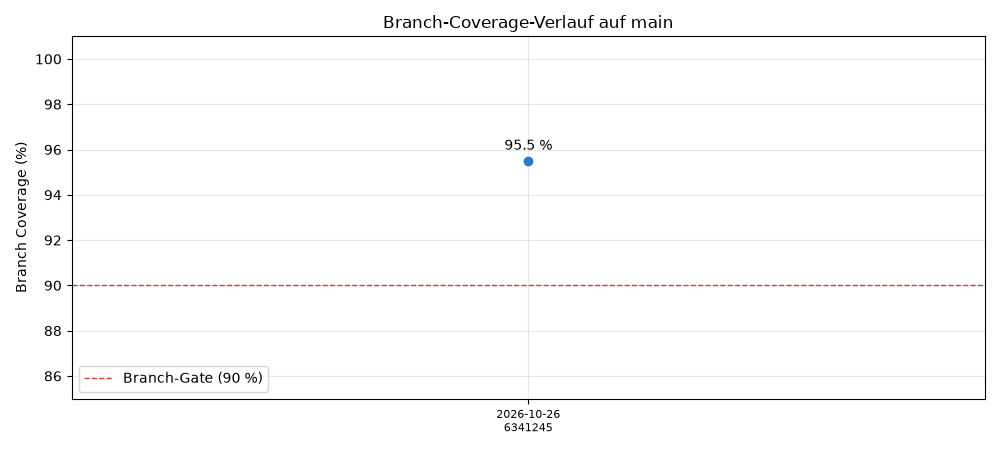

| Element | Missed Instructions | Cov. | Missed Branches | Cov. | Missed | Cxty | Missed | Lines | Missed | Methods | Missed | Classes |
| Total | 26 of 559 | 95% | 5 of 110 | 95% | 7 | 70 | 10 | 90 | 2 | 15 | 0 | 5 |
| ch.bbw.m450.tictactoe | 94% | 97% | 4 | 44 | 6 | 39 | 2 | 7 | 0 | 2 | ||
| ch.bbw.m450.tictactoe.players | 95% | 91% | 3 | 26 | 4 | 51 | 0 | 8 | 0 | 3 |